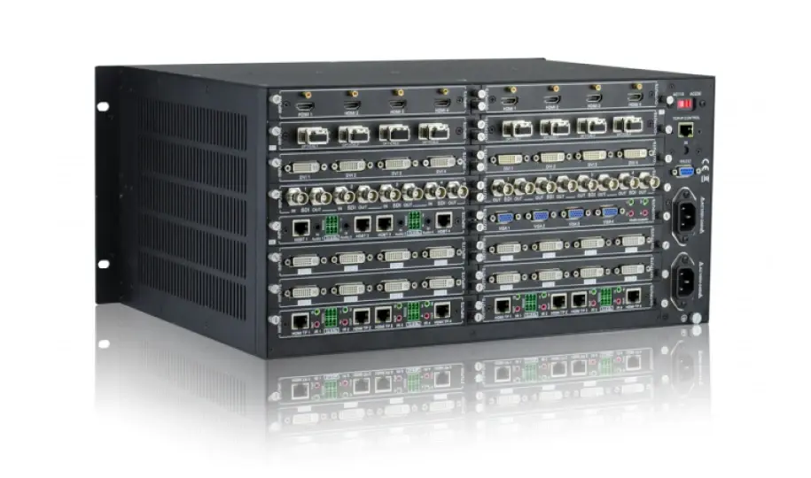

Коммутационное оборудование
Под брендом Digis выпускаются доступные профессиональные коммутаторы и матричные коммутаторы, позволяющие реализовать свободное перенаправление видеоконтента из нескольких источников к множеству дисплеев с параллельной обработкой сигнала. Многие модели коммутаторов Digis включают функцию масштабатора и позволяют адаптировать разрешение видео к параметрам конечного устройства отображения, реализовать вывод контента в режиме видеостены или в многооконном режиме. Несмотря на доступную цену, коммутационное оборудование Digis зарекомендовало себя как надежное и легкое в установке и обслуживании.